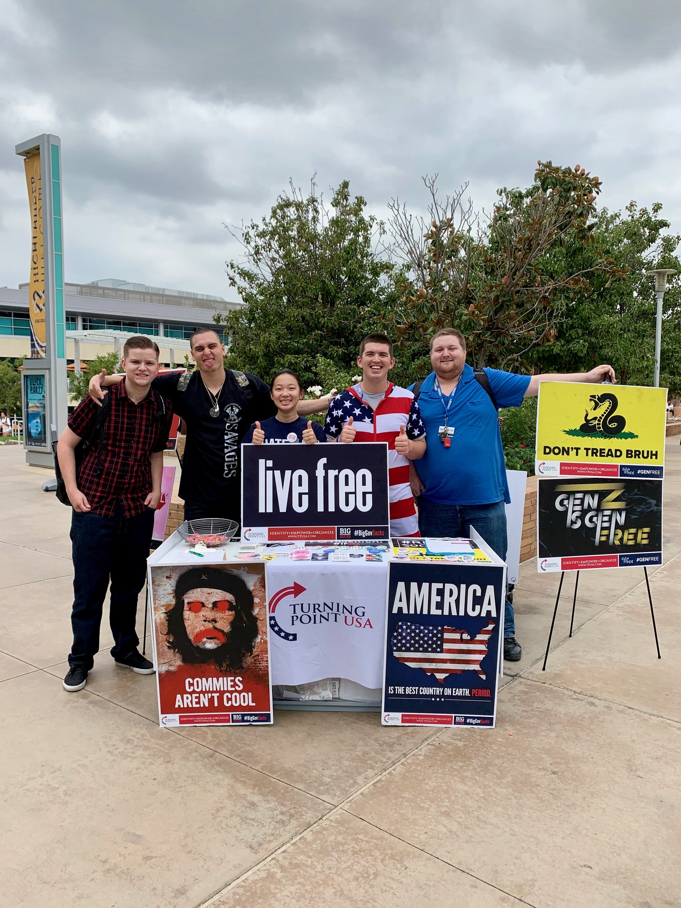
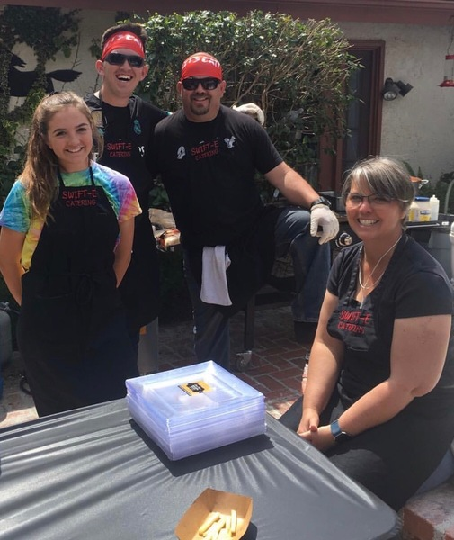
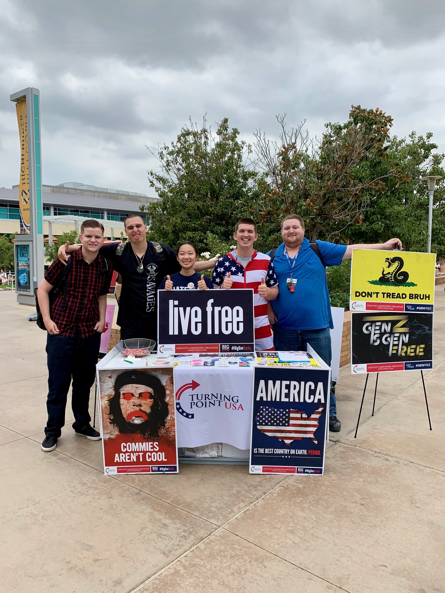
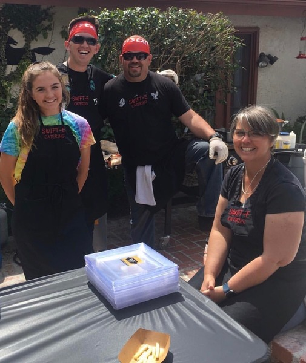

Noah Swift
I was born in Rancho Cucamonga California in
October of 2000. I grew up with 6 siblings, mostly girls, which has given
me great experience working with others. I also played sports growing up,
as well as Varsity tennis in High School. I also was in marching band for
all of high school, and was the Drum Major my senior year.
After graduating from High School I was hired at In-N-Out Burger, and
still hold employ there. I also work at my families catering company,
SWIFT-E catering. I also work part-time with a group on my campus called
Turning Point USA as a Campus Coordinator. I plan to continue my career
at In-N-Out and go into management after college.
Along with my work, I also am a student at University of California- Riverside.
I started out as a chemical engineering major, but soon after I realized
I wanted to follow a different career path so I am currently changing to
a business major.
Experience
Associate
• Customer service experience. Taking orders, working with customers if orders are incorrect.
• Safety captain.
• Experience with leadership, time-management, and teamwork
Line Cook
• Managed the grills and fryers, fulfilled orders and made sure all food was properly and safely cooked
• Worked to set up and tear down events
Campus Coordinator
• Ran tabling events
• Coordinated meetings and speaking events
• Ran chapter social media pages
Education
UC Riverside
Portfolio



 